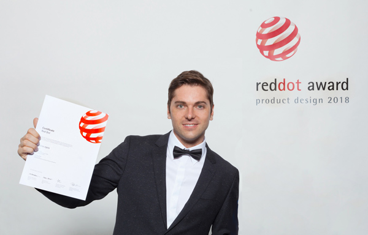

Experience
Headed product design for the Real Estate vertical at SMG once Switzerland's two largest real estate portals had merged, with a direct line to the Managing Director. Hired, coached and grew a team of 10 designers working on three brands and several product teams. Moved three brands onto one shared platform through a multi-brand architecture, and defined the standard for design quality, consistency and strategic direction.
Took ownership of the property listing journey, the core revenue engine of the platform (CHF 164M in 2025). Rebuilt the listing funnel as a modular flow, taking completion from 48% to 72%. Applied price anchoring to the package selection page, which lifted the take rate of the medium package by over 30% and listing revenue by 26%. Ran design for the pay-per-ad funnels and launched the first monetisation of property seekers, which grew B2C real estate revenue by over 35% and is now the largest single B2C revenue stream in the vertical.
Rolled out a design system on all three brands, lifting design ticket velocity by 70%. Worked with IAZI to create the Market Atlas, which gives users pricing insights for each region. Drove the ImmoScout24 rebrand and was co-lead of the Design System Guild.
Set up the UX team and a lasting way to train and keep design talent. Started and ran the Cocomore UX Academy, a six-month program covering product design and user research, with four senior designers hired as faculty. Worked with Elisava (Barcelona) and the University of Amsterdam to make mandatory student internships a recurring source of talent.
Taught 24 students on live client work for Samsung, Nestlé and Procter & Gamble, and each wrote a master's thesis on their Academy project. Six graduates (25%) became permanent hires and relocated to Germany. Grew the UX team to 12 designers at peak while lowering design team costs by 60% against a fully hired team. Served as External Professor of User Experience Design at Elisava, Barcelona. Ran UX for client work such as the BD Rowa website relaunch and the Rabobank banking app.
Brought the tolino and Kobo reading ecosystems together once Rakuten Kobo had taken over the tolino platform, working under Toronto's Head of UX. Reworked the experience on e-readers, mobile apps and web, and led the shared design system used by 37 product teams. Made manga reading possible on Rakuten's devices, opening the way into the Japanese market.
Created a haptic page-turn control on the rear of the tolino epos so people could read with one hand, the first of its kind on an e-reader. Worked with the German Association for the Blind and Visually Impaired (DBSV) on accessibility options for readers with three kinds of visual impairment, such as inverted colours and syllable-by-syllable capitalisation. The tolino epos went on to win the Red Dot Design Award 2018.
After the tolino epos and shine launched, tolino's e-reader usage share in Germany climbed from 22% (2017) to 40% (2018), and Amazon Kindle's dropped from 65% to 50%.
Was responsible for the UX of Telekom's IoT heating services and the Magenta Smart Home app, which link third-party heating hardware into one digital ecosystem. Worked with hardware partners such as Junkers on remote, sensor-based heating control that works across brands. Created my first design system, with every smartphone app component included, so screens looked consistent and shared the same parts. Raised usability through in-depth qualitative research and usability testing.
Designed digital products for the top comparison portal in Germany, covering energy, telecom and financial products. Developed the concept and UX of the Vertragsmanager (contract manager) app, built fast calculators for financial products, and upgraded the blog, newsletter and mobile web experience.

Education
Certificates
Appearances
Let's Work Together
Interested in working together? Tell me what you're building and let's talk.
Get in Touch!